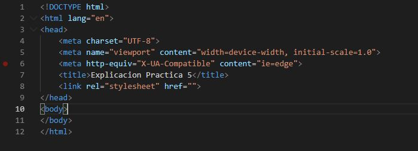
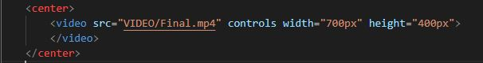
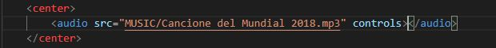
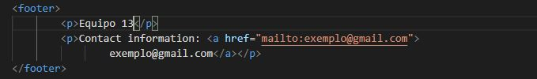

HOME
Complemento Practica 5
Etiqueta HTML5
Esta es la parte principal con la que se debe de empezar una web, esta es la manera correcta para evitar errores y tambien aparecer en los buscadores como una pagina web segura.
Etiqueta header

Esta etiqueta se utilizo para que se mostrara en la parte superior de la página dando la bienvenida de esa manera.
Etiqueta Video
Esta etiqueta se utilizo para que se mostrara contenido audio visual relacionado al tema que es el fútbol y esta compuesta por atributo que es controls lo cual permite dar play, adelantar y atrasar el video.
Etiqueta b y Strong

Esta etiqueta se utilizo para que se mostrara partes más destacadas para la vista del usuario así como para el navegador.
Etiqueta Audio
Esta etiqueta se utilizo para que mostrar un audio en el navegador y cuenta con el atributo controls para permitirte al usuario, reproducirlo, pausarlo o adelatar y atrasas.
Etiqueta footer
Esta etiqueta se utilizo para que le de terminación a la pagina